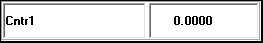

iTest User's Guide
The ADT Digital display object will display one or more channel values using different colors. These are based on any configured limits and/or warnings.
ADT Digital

General Tab
| Option | Description |
| Channel... | Opens the Channel Selection dialog, which you can use to select the database channels whose names and values you want to display on the ADTDigitalIndicator control. Note that you may need to resize the display object as you add database channels to be able to view them. |
| Copy/Paste | This allows you to copy an entry and paste it back into the list. |
| Add Separator | Adds a blank row in the list to provide spacing. This is visible when the control is displayed as well. |
| Remove | Deletes the selected database channel(s) from the channels list. |
| Remove All | Deletes all database channels in the channels list. |
| Move Up/Move Down | Movies entries up and down in the list. It can also move a separator up or down. |
| Cell Widths Ratio | Select the relative widths of the cells in the ADTDigitalIndicator. |
| Label Field | Select a label for the ADTDigitalIndicator. The default is Automatic. If Alias, Description, Customer Name, or Module Name was selected but not defined for a channel in its channel definition, the channel name displays by default. The Customer Name/Alias and Alias/Customer Name options will display both labels in the leftmost cell. |
| Control ID | Specific ID that iTest uses to reference the control. |
| Display Units | Configured on a channel-by-channel basis from the list. This field checks to see what units are defined for the selected channel, and then checks for any alternative units of measurement that are available. |
| Display Decimal Points | Configured on a channel-by-channel basis from the list. |
| Limit Colors Active | When selected, the background color changes to reflect the limit state of the database channel (Red=limit, Yellow=warning, etc.). |
| Display as Time | When selected, database channel values display as units of time. |
| Draw Borders | When selected, adds borders around the ADTDigitalIndicator object and each channel. |
| Editable | When selected, allows the change of the displayed channel’s value by editing the value field in the control during Runtime. |
These properties are useful when issuing the following mailslot message:
\\.\mailslot\DisplayName>>$SETITEMPROPERTY ControlID PropertyName PropertyValue
The following are the names of the properties that can be changed by mailslot message to the display. These property names may or may not be the same as the property names shown on the display object property setup dialogs. Most of these property names are self-explanatory. The first column is the data type of the property.
The int or OLE_COLOR for color is the color RGB values. “BSTR” means the type of the property is string. “int”, “float”, “long”, “short”, “double” means the type of the property is number. “Boolean” means the property value should be 1 or 0.
Font property syntax is complicated.
<font name>,<bold>,,<italic>,<font size>,,<strikeout>,<underline>,
example: Arial,0,0,0,97500,0,0,0,400
ADT Digital Object Properties
| Type | Property | Notes |
| int | BackColor | - |
| int | ForeColor | - |
| string | ChannelName | delimiters: \r\n, semicolon, \n, comma |
| string | DataSource | not implemented |
| var | Variant | not implemented |
| bool | Enabled | not implemented |
| bool | LimitColorsActive | - |
| long | LabelWidth | - |
| long | ValueWidth | - |
| long | UnitsWidth | - |
| long | DisplayFormat | - |
| string | LabelField* | values are case-sensitive |
| bool | DrawBorders | - |
| bool | Editable | - |
| long | BackColor1 | - |
| string | DisplayUnits | - |
| font | Font | - |
| string | DisplayPrecisions** | - |